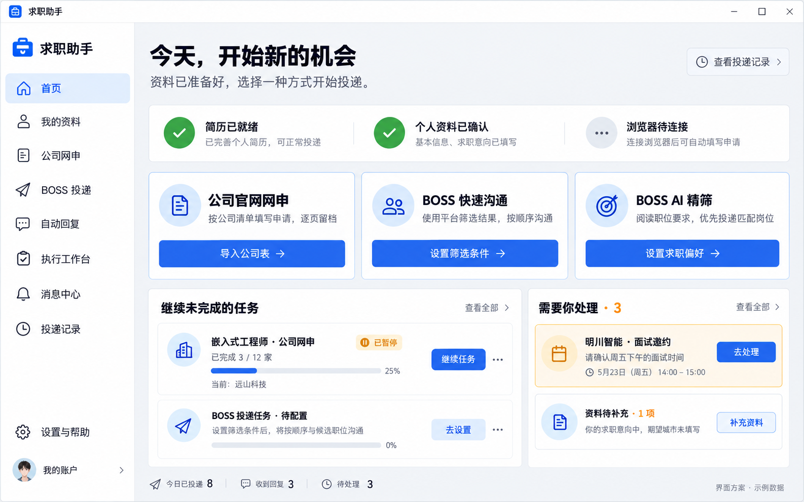
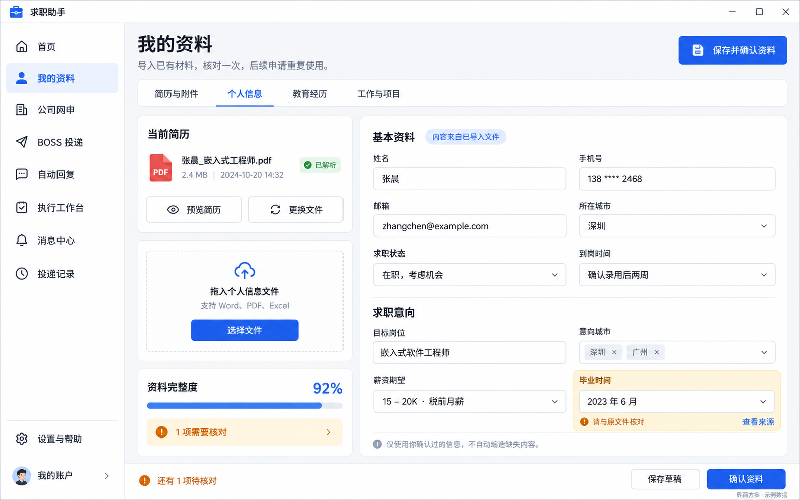
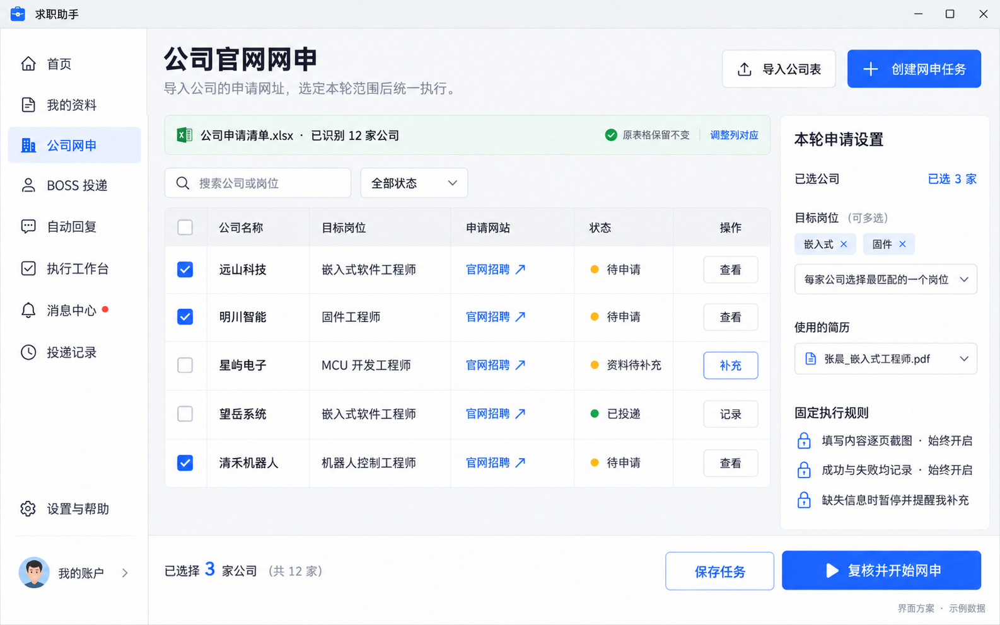
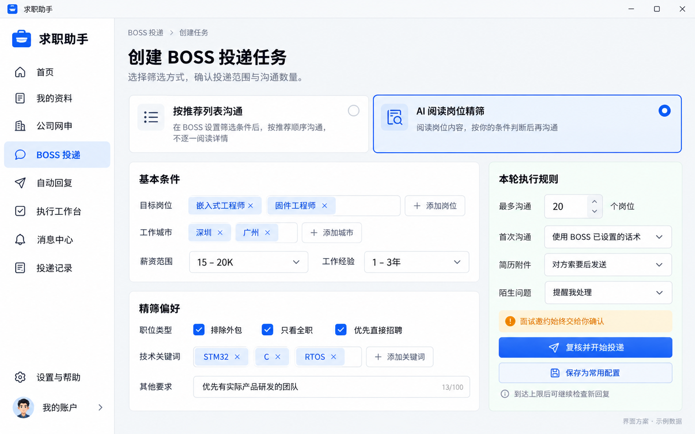
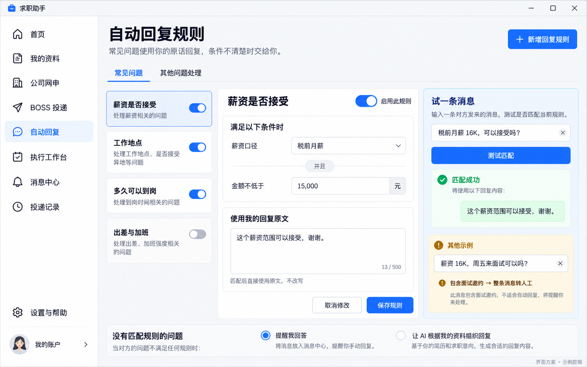
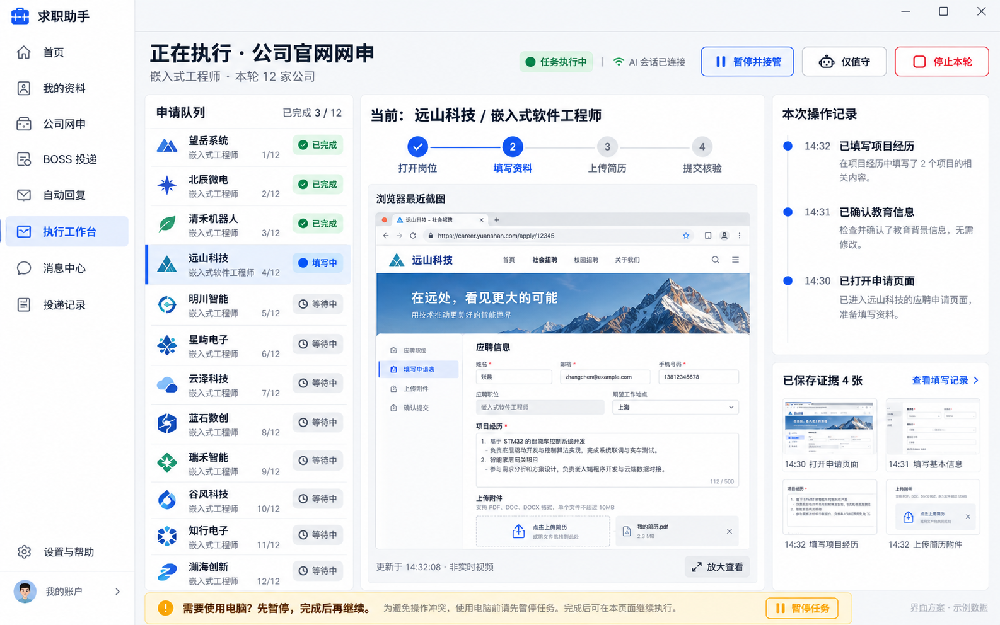
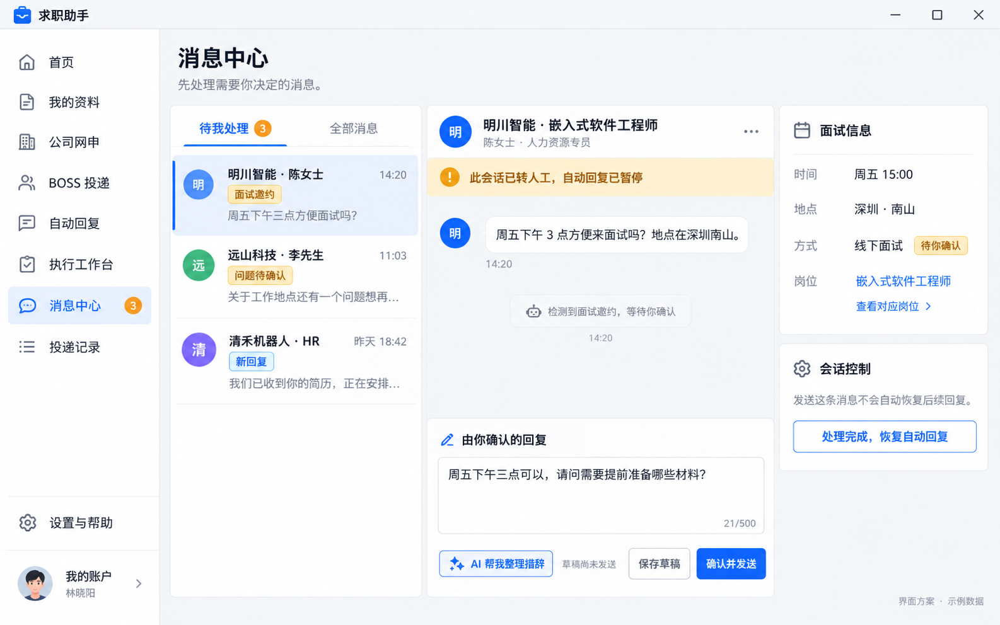
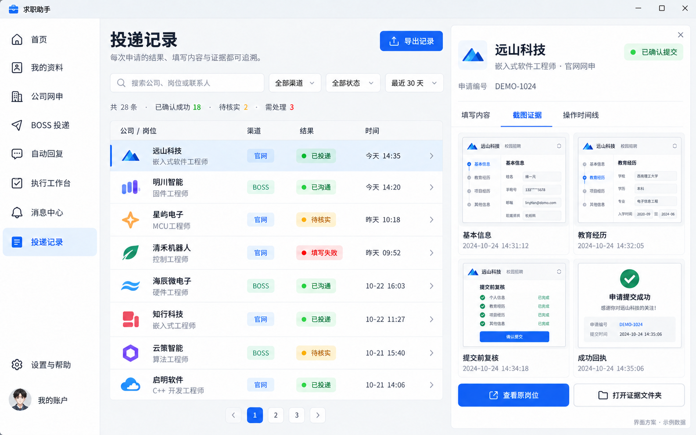

01 / 08
查看原图 ↗首页：开始任务与处理待办
三种投递入口、继续未完成任务、处理待办；把下一步行动放在首页。

02 / 08
查看原图 ↗我的资料：导入、预览与核对
导入已有材料，预览简历、核对解析字段、确认个人资料；不要求手写路径或 JSON。

03 / 08
查看原图 ↗公司网申：表格导入与任务配置
导入公司表、调整列映射、勾选本轮公司、选择简历；截图与失败记录固定开启。

04 / 08
查看原图 ↗BOSS投递：两种模式与筛选条件
明确区分推荐列表连续沟通与 AI 阅读岗位精筛，设置条件、数量与回复模式。

05 / 08
查看原图 ↗自动回复：可视化规则与匹配预览
以表单编辑条件和原话，提供消息匹配测试；面试混合消息整条转人工。

06 / 08
查看原图 ↗执行工作台：进度、画面与接管
队列、当前步骤、最近截图、证据与操作记录集中展示；突出暂停接管和停止。

07 / 08
查看原图 ↗消息中心：面试邀约与人工确认
原始来信、待确认面试信息与回复编辑同屏；保存、确认发送、恢复自动回复分开。

08 / 08
查看原图 ↗投递记录：检索、结果与证据详情
按公司、岗位、渠道及结果检索，查看填写内容、截图证据和操作时间线。
